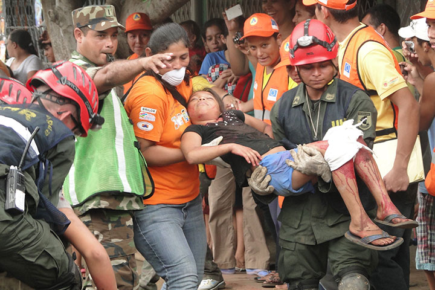
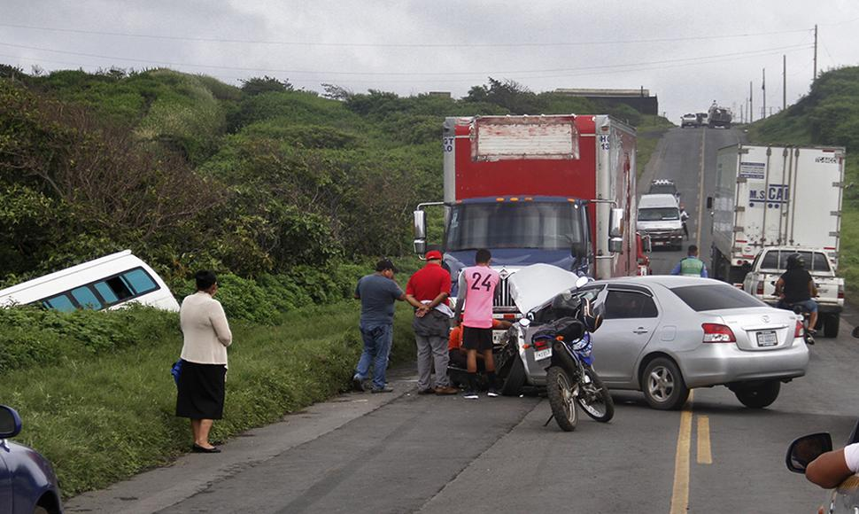
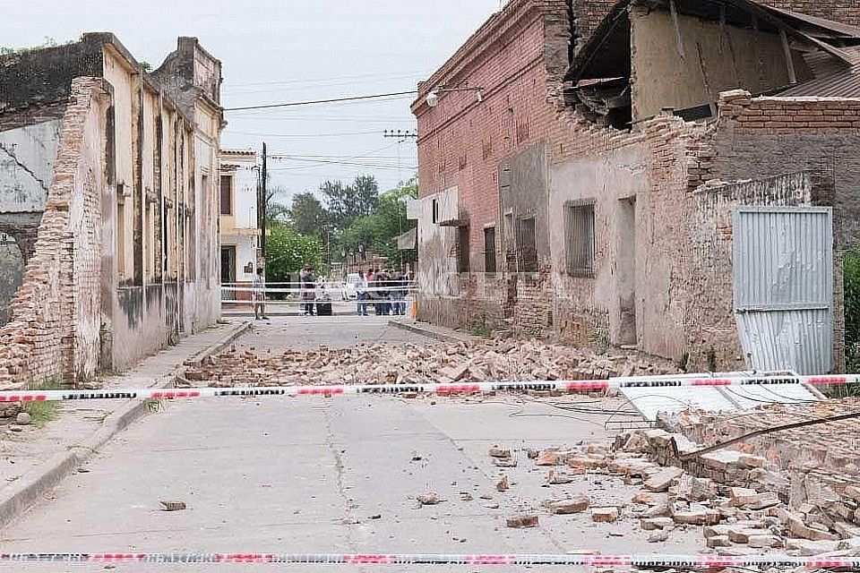

PUCYPA
Puesto de mando Departamental del Programa usura cero y Programa Adelante
Ámbito político
En el ámbito político: Se refiere a la estructura de dirección y coordinación que el FSLN utiliza para planificar, supervisar, y ejecutar actividades relacionadas con su proyecto político, tanto a nivel partidario como gubernamental. En este sentido, el Puesto de Mando es una instancia organizativa clave para la toma de decisiones estratégicas.
Historia
Durante la lucha revolucionaria del FSLN contra la dictadura de Somoza (1960-1979), los "Puestos de Mando" eran los centros de comando desde donde se organizaban las operaciones militares y las estrategias guerrilleras. Eran lugares cruciales para la planificación y coordinación de los combatientes sandinistas.
actualidad gubernamental
referencia a las oficinas o grupos específicos dentro de las instituciones del Estado bajo la dirección del FSLN que tienen la responsabilidad de gestionar crisis, coordinar respuestas ante emergencias o asegurar la implementación de políticas públicas.


Obra publicada con Licencia Creative Commons Reconocimiento Compartir igual 4.0